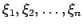
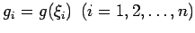
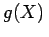
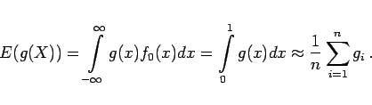

Inhalt Index DeskTop Bronstein

 Wahrscheinlichkeitsrechnung und Mathematische Statistik Mathematische Statistik Monte-Carlo-Methode Beispiel für eine Monte-Carlo-Simulation
Wahrscheinlichkeitsrechnung und Mathematische Statistik Mathematische Statistik Monte-Carlo-Methode Beispiel für eine Monte-Carlo-Simulation


Zu Berechnung von (16.175) geht man von n gleichverteilten Zufallszahlen  als Realisierung der gleichverteilten Zufallsgröße X aus. Dann sind die Werte  Realisierungen der Zufallsgröße , für deren Erwartungswert sich nach Formel (16.49a,b) ergibt:
|  | (16.176) |
Diese Vorgehensweise, die die Formel für den Mittelwert einer Stichprobe verwendet, wird auch als gewöhnliche Monte-Carlo-Methode bezeichnet.